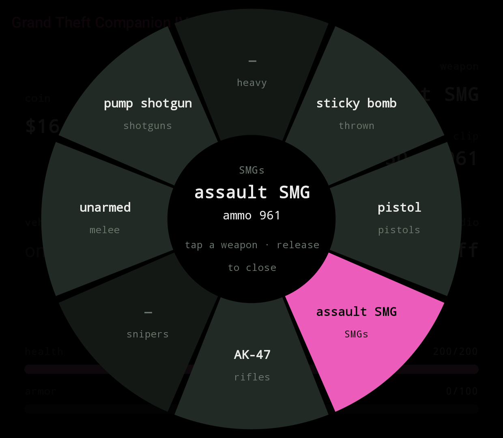
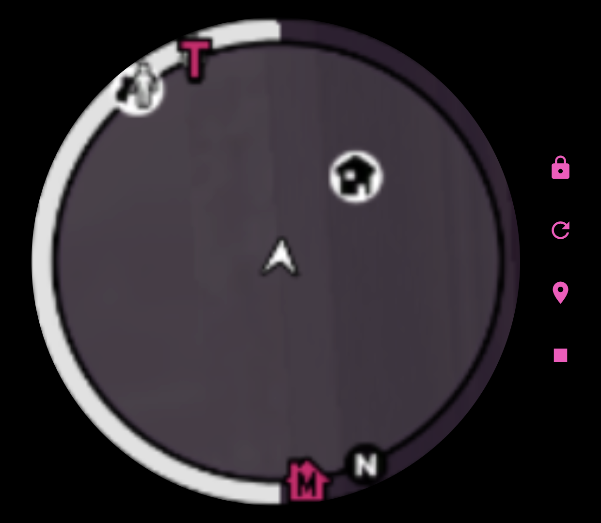
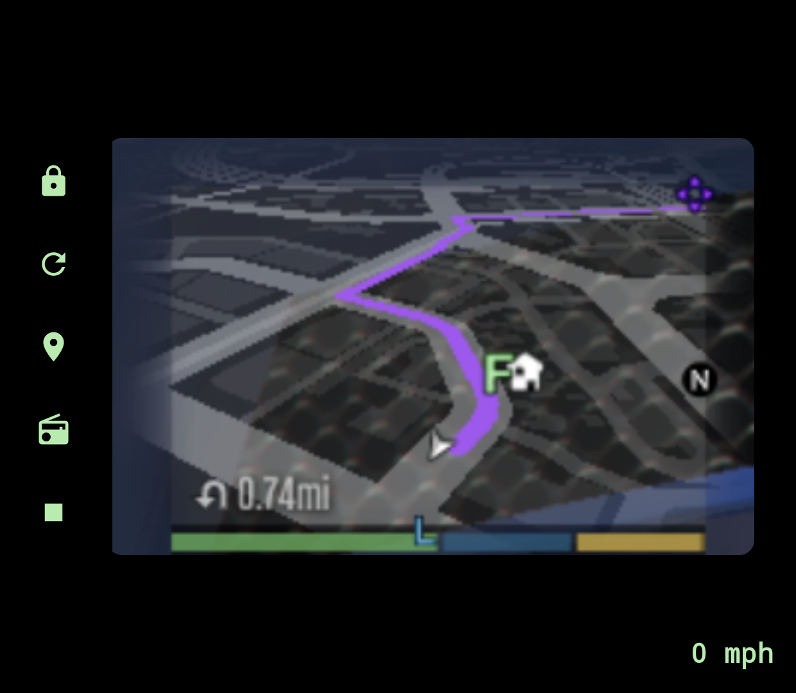
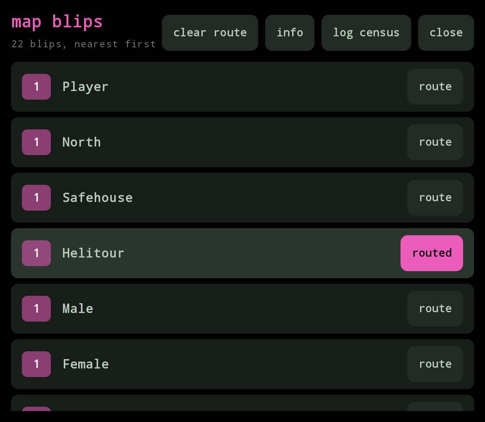
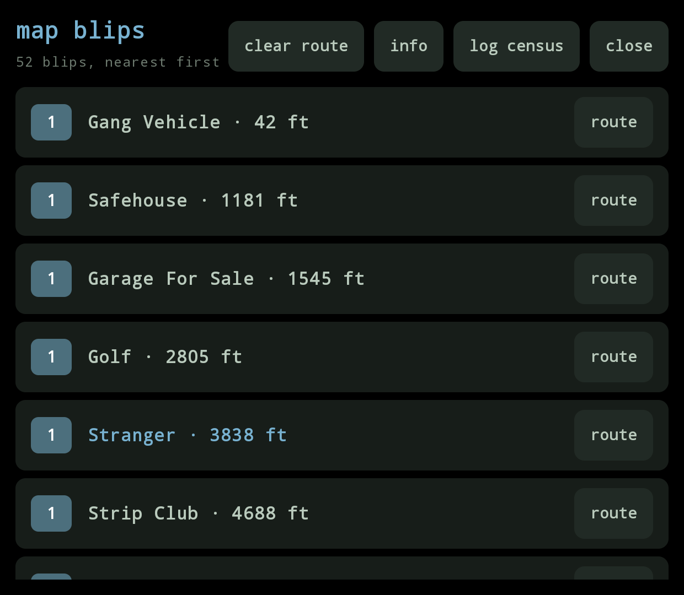

What it does
Both layouts share the same cards: money, weapon and ammo, vehicle and speed, radio, with health and armor bars underneath and a tappable radio picker while driving.
Picks the right layout by itself
The app is the same for both games and chooses the GTA IV or GTA V layout from the plugin's hello frame.
Switches on its own
Quit one game and start the other and GTC switches layout on its own.
Health and armor bars
Live underneath the HUD cards so a glance at the bottom screen is enough.
Tappable radio picker
Retune the radio while driving, from the bottom screen, without pausing.
Weapon Wheel
An eight-slot wheel on the bottom screen, laid out like GTA V's: pistols right, rifles down, melee left, heavy up. Tap a slot to switch weapon; tap the already-selected slot again to step through its other weapons.
Opens two ways: tap the on-foot weapon card, or hold LB / L1 on the pad. Releasing LB closes it. A tap-opened wheel closes by itself after a few seconds of no input. Slots are labelled in text.
GTA IV is the one that benefits most: it has no in-game weapon wheel. Rockstar's HUD only cycles through the slots one at a time with the shoulder buttons, so picking a specific weapon in a hurry means tapping through everything you own. GTC gives it the direct-pick wheel the base game never had, carrying every weapon from the base game, The Lost and Damned and The Ballad of Gay Tony.
GTA V keeps its own wheel on the top screen; the companion's is a touch-friendly mirror on the bottom. The equipped weapon follows whichever wheel finishes last, so you can start with the pad and finish with a tap, or the other way around.



MiniMap View
Once connected, the bottom screen is a three-page pager laid out left-to-right as cheats, HUD, map. The HUD sits in the middle, one swipe either way. A one-time tip on first connect points this out. The pager always cold-starts on the HUD and resets to the HUD when you switch between IV and V.
The map page mirrors the game's own minimap from the top screen and enlarges it, using Android's screen-capture permission. It ships no map imagery and shows exactly what the game draws, blips and GPS route included. GTA IV is clipped to a circle to match its native radar; GTA V stays rectangular to match its map.
Blips View
Every icon on the game's own map, nearest first, grouped by name, with a one-tap route button per icon. Opens the game's own GPS to that destination without having to pause and move a map cursor. Works on both games.
Open it two ways:
- The pin icon in the HUD status bar (both games, both pager pages). It mirrors the title's accent while the connection is live and fades out when stale.
- Dpad-down on GTA IV. The plugin reads the game's own pad state so the key never has to reach the companion. GTA V has no stable control id for a raw dpad-down in a vehicle, so the pin icon is the only way there.


Cheats
A third tab for one-tap cheats, grouped into collapsible sections (health, wanted, weapons, vehicle, world, toggles). All sections start open; tap a header to collapse the ones you don't care about. Collapsed sections are remembered across app launches.
GTA IV
The base-game phone-cheat set: heal, wanted +1 / clear, all weapons, max ammo, fix vehicle, next weather, next time of day, parachute, and the three named weapon-set cheats (advanced, poor, and the ultimate 482-555-0100 combo). Toggles: invincible, fast reload, never tired, slow motion, police ignore.
GTA V
Every gameplay cheat from GTA V's own phone-cheat list: wanted -1, fill special, skyfall, six spawn-car buttons (adder, zentorno, bati, sanchez, frogger, bmx), plus toggles for infinite clip, fast run, low gravity, drunk, fast swim, super jump, explosive ammo, explosive melee, incendiary ammo, and slippery cars.
Toggle lights come from what the game reports, not from the tap, so a toggle the game refuses never looks on. Tapped something that didn't work? The last refusal shows as a short red line at the bottom in the plugin's own words.
GTA V flags the save as cheated the first time you tap a cheat, same as entering the code on the phone, so cheated saves block Achievements / Trophies for that session. GTA IV has no equivalent flag.
GTA V adds what only GTA V has
- Three protagonists — accent colour, name and cash follow whoever you are playing (Michael / Franklin / Trevor); a “switching…” screen covers the character-switch camera.
- Special ability bar (ready / active / charging — the game exposes states, not a level).
- Five wanted stars instead of six.
- Vehicle class on the vehicle card, altitude for aircraft, no engine bar on bicycles, “no radio” where the vehicle has none.
- Radio picker built from the running game's own station list, matched by station name rather than index, so DLC stations and build-to-build reordering don't break it.
- Tags for mission / cutscene / animal form; non-protagonist peds (Director Mode) get a neutral palette with cash and special hidden.
Story mode only. In GTA Online the plugin publishes nothing but an “online” flag.
Wanted stick lights
When the player picks up a wanted level, the Thor's analog-stick RGB rings flash red and blue like a police light bar, one stick red and the other blue, trading places on each beat. More stars means a faster beat (around 600 ms at one star, down to 400 ms at full stars). The sticks go dark again the moment you lose the cops, and stay off during pause, loading, GTA Online, or a character switch.
What you need
| GTA IV | GTA V | |
|---|---|---|
| Game build | Complete Edition 1.2.0.59 | any build your Script Hook V release supports |
| Plugin | ThorBridge.asi | ThorBridgeV.asi |
ASI loader (dinput8.dll) | Ultimate ASI Loader, 32-bit | the one that ships with Script Hook V |
| Also needed | — | ScriptHookV.dll |
| Modes | story + both episodes | story mode only |
Plus, for either game: the GTC app, and a launcher that lets you set per-game environment variables.
Setup is six short steps. Read the Quick start in the README for the exact file placement and launch options.